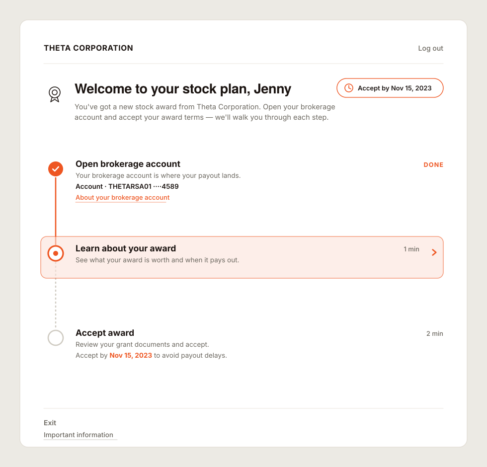
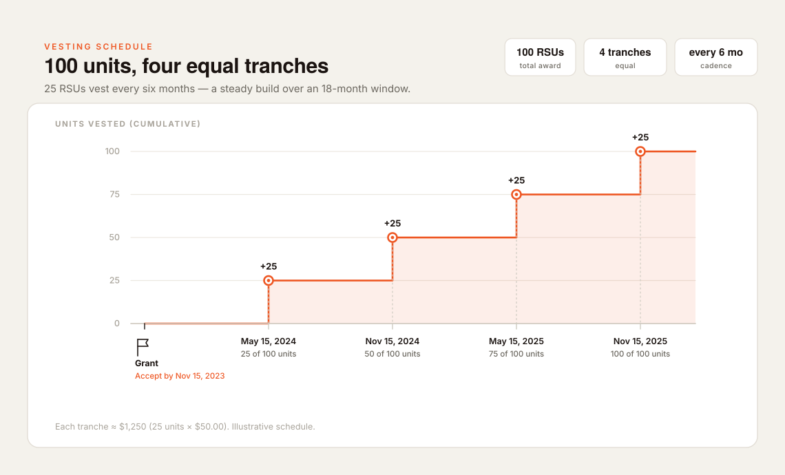
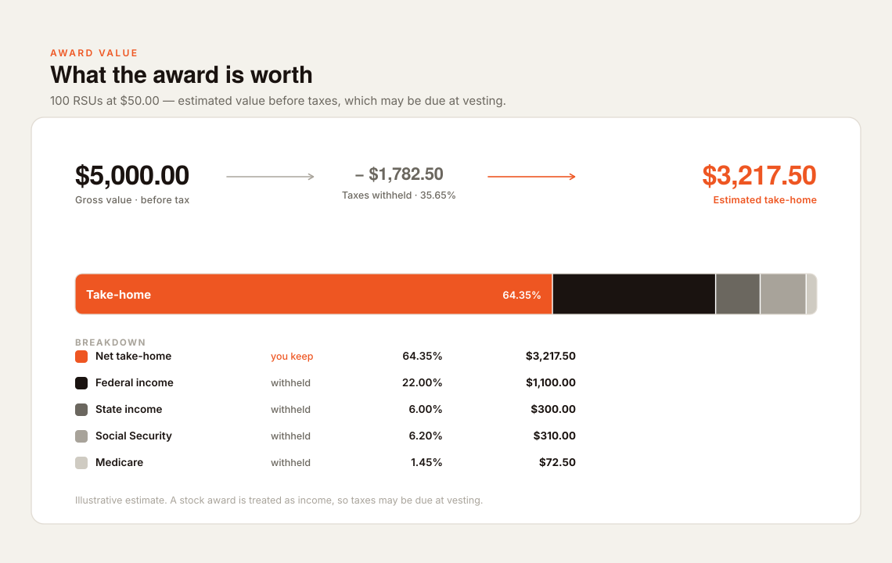

Less than half of participants finished in the first session
Fidelity Stock Plan Services is where employees manage their equity — accepting awards, understanding vesting, taking action on grants. When a new award arrived, the accept-and-enrol flow demanded context participants didn't yet have. Most bailed and came back later — if they came back at all.
For the firm, that incompletion had three concrete costs:
- 01
Low completion
Awards left unaccepted: money employees were entitled to, left on the table.
- 02
Call volume
Confused participants called service reps. Completion was happening — just expensively.
- 03
Low confidence
Participants who did finish weren't sure they'd done it right, eroding trust in the platform.
Island-hopping
Accepting an award and enrolling in a plan were two separate flows — built at different times, sitting in different parts of the product. Participants had to jump between them, losing the thread each time. We called it island-hopping.
The pattern had three compounding effects:
- 01
Cognitive load
Each island reset context. Participants re-oriented on every jump, carrying what they'd just learnt in working memory.
- 02
False-completion trap
Finishing the accept flow felt like done. Most didn't realise enrolment was a separate, necessary step.
- 03
Post-action anxiety
"Did I do that right?" No persistent status view left participants unable to confirm they'd finished.
Collapse two flows into one guided experience. Give participants a single journey — not a series of destinations to find their own way between.
Four moves. One continuous experience.
Persistent progress tracker
A fixed component showing every step, always visible, always showing where you are and what's left. Eliminates the false-completion trap and post-action anxiety in a single structural move.
Consolidation
Accept and enrol stitched into one sequential flow. No redirects, no "go here next." The tracker owns the journey end-to-end.
Contextual education
Plain-language explanations of vesting, award value, and tax, surfaced at the moment of relevance, not buried three clicks away.
Visual cohesion
One visual language across every step, so participants always knew where they were in the broader experience.



From a feature to a framework
Mid-project it became clear that what I'd built wasn't just a better onboarding screen. The progress tracker was acting as an orchestrator — a shell that could sequence any set of sub-tasks, not just these ones.
Three properties made the architecture inherently reusable: steps were swappable, the completion model was persistent, and progress state was always visible. The structural fixes — false-completion, post-action anxiety — were solved at the level of the pattern, not patched individually on each flow.
Productise the pattern. Hand off not just a design for one flow, but a framework any SPS team could adopt for any guided journey on the platform.
Two rounds, no changes recommended
- 01
Concept testing — moderated · 11 participants
Mapped where participants got stuck, what the tracker gave them, and whether the consolidated flow resolved island-hopping. Directed iteration on all four design moves.
- 02
Validation — UserTesting · 8 participants
Screened for low financial knowledge — the hardest users, by design. Unmoderated. Validated the refined design against all three original problem statements. No changes recommended.
"Performed exactly as planned and hoped." — research lead, validation round.
One pilot result. One enterprise track record.
Attribution: RMD, NQDC, and crypto journeys were built by other teams using this pattern — other teams' work, not mine. These figures are the framework's post-handoff track record.
One flow. An enterprise pattern.
Systems thinking under a narrow brief
The brief was one flow; the delivery was a reusable enterprise pattern. Seeing the structural opportunity, and building to it, is the point.
Research-led, point-for-point
Every design decision maps to a specific problem — island-hopping, false-completion, post-action anxiety — each validated across two rounds.
Restraint as a result
No feature bloat. The tracker does one thing, consistently. That constraint is exactly what made it adoptable across nine journeys and three business units.
Concept-to-handoff ownership
From the first research insight to framework documentation handed to other product teams: one designer, one thread, one accountable outcome.
Confidentiality: all figures, names and screens use fictional "Theta Corporation / Jenny Jones" scenario data. Mockups are original recreations of generic stepper and journey components in my own visual language; no production screens, internal research, or client branding are reproduced.